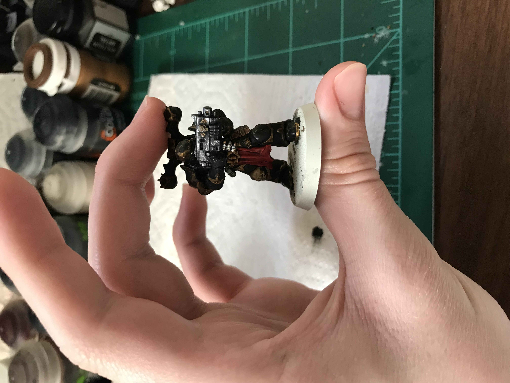

Home Resume Programs
Hobbies
I have lots of interests, and am generally curious about new things, and here I have listed some of these hobbies.
Video Games

I enjoy playing video games in my freetime, especially strategy games.
Some of my favorites are
Minecraft, Rimworld, Noita,
Blood Bowl II, and Slime Rancher.
Minature Painting

I enjoy painting wargaming miniatures like this Chaos Space Marine.
Programming

I enjoy proggraming outside of my schoolwork, as it is a skill that helps me practice complex
problem solving while also acting as a creative outlet,
though it can be frustrating at times.
I am most farmiliar with Pyton, but have some experience with HTML
and CSS.
Reading

I enjoy reading both books and comics. Some of my favorite authors are Brandon Sanderson, Jonathan Stroud
and Ernest Cline.